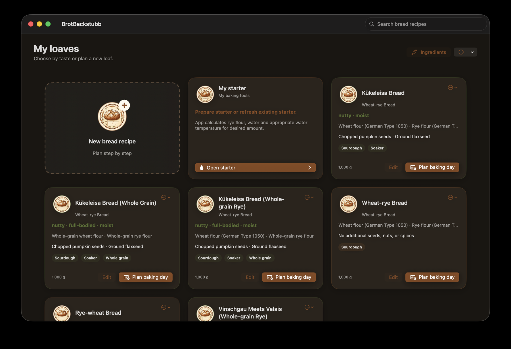

Overview

BrotBackstubb 0.1.0
Bread Calculator supports you in creating, calculating, and scheduling free-form breads. The app calculates ingredient quantities from the desired bread weight, considers the water absorption of the selected flours, and the water from the brewing and quenching pieces, and guides you through the recipe step-by-step on the baking day.
All recipes appear on the My Loaves homepage. From there, you can create a recipe, edit an existing recipe, create a PDF or Melan file, and start the baking day.
Principle
Warnings in the recipe assistant indicate values outside the recommended range. They do not block justified exceptions. Thus, traditional recipes can also be represented.
My Loaves
Recipe Cards
A recipe card displays the name, bread type, flavor-influencing ingredients, procedure characteristics, and target weight. The most important actions are highlighted at the bottom:
- opens the temporal planning immediately and is emphasized as the most important action.
- opens the recipe assistant with the existing values.
- The action menu at the top right offers PDF display and storage, Mela transfer, edit, and delete.
Using the search bar at the top right, you filter the saved breads. New Bread Recipe starts the assistant.
My Setup
Your own card My Setup calculates rye flour, water, and water temperature for the desired setup quantity. It is not part of a single bread recipe and can be opened at any time.
Create a Recipe
The assistant guides you through the recipe in up to eight steps, depending on the selected ingredients. You can switch between pages using Continue and Previous. When editing, Save Changes saves the existing recipe; you can create a copy using More Options.
- Set the name and desired weight of the finished bread.
- Select one to three flour types and distribute their percentages to a total of 100%.
- Check the automatically recommended rye, wheat, or spelt sourdough starter, and adjust it if offered.
- Select grains, seeds, nuts, and spices.
- If there are pre-made starter ingredients, select either the Braising Piece or the Soaking Piece. Without such ingredients, the app skips this step automatically.
- Determine the total salt content.
- Verify the calculated base.
- Write a recipe description or use a suggestion.
Flours and the default water factor
Each supplied flour has a practical default water factor, expressed as grams of water per 100 g of flour. BrotBackstubb calculates the initial water quantity for every selected flour separately and adds the results. This value is a starting point for the app's recipe calculation, not a standardized farinograph water-absorption measurement.
For flour from another country or a particular mill, create a custom ingredient with an appropriate starting factor. Then use Adjust hydration · DY/TA correction to adapt the water quantity to the actual batch and your baking experience. Do not select a German flour type merely because its translated name appears similar.
The first flour starts at 100%. Additional flours are optional. When adding, the app initially suggests the remaining free portion up to 100%. If you change an ingredient yourself, your input remains unchanged. With Automatically Complete Remaining, you can set the recently added flour back to the remaining portion. Only when all active flours together reach 100% is the mixture complete.
With Adjust Hydration · TA Correction, you only adjust the water amount to a specific flour batch or your baking experience. A correction point changes the net hydration by exactly one percentage point and thus the dough yield by one point. For example, 70% hydration corresponds to a TA of 170. The reference amount is the entire flour and the grain-based ingredients in the Braising or Soaking Piece. The app displays the starting value, corrected hydration, TA, and the water change in grams. The range is from -10 to +10 points; larger changes can significantly affect dough consistency and, in the case of free-formed breads, the shape stability. A double-click on the slider resets the correction to 0.
The Three Supported Sourdough Directions
BrotBackstubb deliberately calculates only rye, wheat, and spelt sourdough automatically. These three variants cover the most common breads and each has its own direction. Other flours may be part of the main dough but receive no sourdough values derived from rye, wheat, or spelt.
Rye Sourdough
When a rye percentage is detected, the app recognizes the bread type and suggests an appropriate fermentation range. Automatically uses the recommended value. For a traditional or intentionally different recipe, you can enter your own value. A value outside the recommendation generates a warning but does not prevent further processing.
You will also select the desired flavor profile for the scaling guide. **Mildly sour** uses 2% active starter and a guide at 27-28°C. **Heartily sour** uses 5% starter and a guide at 25-27°C. The rise time is approximately 20 hours in both cases. The app calculates the required starter amount from the sourdough flour and assumes the guide temperature and rise time for the baking day.
White sourdough
For the mildly aromatic white sourdough, 20% of the total flour amount comes from white flour with a hydration of 200 and 5% active starter, about 16 hours at 26-28°C. The optional pH-orientation range is 3.6-4.2.
Dinkel sourdough
For the mild Dinkel sourdough, 10% of the total flour amount comes from Dinkel flour with a hydration of 200 and 10% active starter, about 16 hours at 28-30°C. Due to the special characteristics of Dinkel, the app evaluates the rise here by volume increase, fine bubbles, and a mildly sour aroma and does not provide a general pH target.
Crushed grains and other ingredients
Additional ingredients are separated by their use. Crushed grains are treated as grain products; seeds, kernels, and nuts are not treated like flour. You enter the quantities in grams. The app shows the approximate relationship to the flour amount and warns if a bread that has been freely pushed is likely to lose shape stability.
Spice limits refer to the recipe size. A warning, such as for sesame seeds, is a professional indication and not a prohibition.
Scald and soaker
| Process | Usage and procedure |
|---|---|
| Pre-dough | Primarily for crushed grains, flakes, and coarse grain components. Set with approximately 90°C hot water and let stand for about 3 hours. |
| Pre-dough | For mixed seeds and strongly water-binding ingredients. Set with 5-25°C warm water and let stand according to the schedule. |
Each ingredient has its own pre-dough water factor. The pre-dough water is automatically calculated and later correctly combined with the main dough water.
Salt content and distribution
The salt level you enter always refers to the **total salt amount** and applies to the entire flour amount. For a pre-dough or pre-dough, the app uses 2% salt based on its solid ingredients. This applies to crushed grains, seeds, kernels, flakes, and nuts. This percentage is not added separately but subtracted from the total salt; only the remainder goes into the main dough. In the recipe view, baking sequence, and export, both portions appear in the correct place.
Recipe description
The description does not change the calculation. You can write it yourself, use a local standard text, or - if available on Mac - use Apple Intelligence for a formulation suggestion. During this process, the app transmits the actual flour amounts and appropriate, conservative flavor suggestions for wheat, rye, Dinkel, Emmer, and Einkorn. For example, a Dinkel-Emmer bread is not referred to as a wheat bread and its grain character can be considered in the text. The app handles a coherent description and removes accidental repetitions. The text is retained in the Mela export.
Use a recipe
Calculated recipe values
BrotBackstubb scales all amounts to the desired final weight and takes into account the baking loss. The following values are shown, among others: flour amount, dough weight, dough yield, sourdough guide, pre-dough, salt, yeast, target dough temperature, proof temperature, and the baking profile that depends on the bread type and size.
The method of generating steam depends on your oven and equipment. Options include an integrated moisture function or a suitable steam source. Always refer to your device's manual. The app intentionally does not specify a particular oven program, vessel, or material.
PDF and Mela
PDF produces a readable recipe format with ingredients, calculated quantities, and workflow. sourdough, sourdough testing, and an existing brew or water proof appear in their actual chronological order. Mela transfers the same calculated quantities and instructions into a format suitable for the Mela Recipe App. In this case, rye, wheat, and spelt sourdough are clearly distinguished. After importing, check if the target app has correctly retained all formatting.
Ingredient List
Open Ingredients to view the ingredient catalog. Flours, cracked grains, other scald or soaker ingredients, and additional recipe ingredients are kept separate and sorted alphabetically. The default water factor is shown as grams of water per 100 g of ingredient. For example, a value of 62 means that the app initially assigns 62 g of water to 100 g of that ingredient. Water itself is not required as a selectable catalog ingredient.
Change a default water factor only if you understand its effect. It is a practical calculation setting rather than a laboratory specification. A change affects new calculations without renaming ingredients in an existing recipe.
The Default Values menu can supplement missing ingredients provided with the app or reset all provided names, water absorption, notes, and limits to the delivery status. Existing ingredients remain unchanged. A complete reset requires confirmation and can be immediately undone via Undo Last Reset.
The Baking Day
Plan Your Baking Day
Open the Baking Day Planner on a recipe card. You can start as soon as possible or choose a desired completion time. A personal rest window prevents scheduling steps during times you are unavailable. Maturity and rest times can continue independently.
When choosing a completion time, the app considers the rest window and the current time. If the baking day has already begun at the selected time, a warning appears, and the baking day cannot be started. The bright suggestion field then shows when you could start as soon as possible and when the bread would be finished. You can take this mode directly by clicking the button in the suggestion field; the top selection changes visibly. The previously selected desired time is discarded and newly planned from the current time.
The overview displays the start, end, and all steps. Optionally, the app creates reminders on Mac or calendar.
With Start Baking Day, the displayed plan is taken as a running process.
Running Process and Total Rest Time
At the top, Total Rest Time shows the remaining time until the bread is finished. It includes both your work and maturation, rest, cooking, and baking times. The progress bar refers to the planned work steps.
A pending work step shows the instruction on the left and the required ingredients on the right. After Complete Work Step, the actual waiting phase appears first. The next work step is only shown when its start time is reached.
Test the Sourdough After Maturity
Once the calculated proof time is up, the screen automatically switches to Sourdough Check. The pre-set five-minute check begins without any additional start button. Check if the sourdough has risen visibly and is dotted with bubbles and smells pleasantly sour. If you use a pH meter, the pH range of 3.7-4.2 is optional for rye sourdough and 3.6-4.2 for the default wheat sourdough recipe. For the dough, the app does not set a general pH goal, as volume increase, fine bubbles, and a mild sour smell are more important. A pH meter is not required for using the app.
After five minutes, the check remains open and the app does not automatically jump to the main dough. You must confirm Check Complete to confirm the proof and continue.
If the sourdough is not yet proofed, Not Proofed · 30 Mins Longer extends the proof time and moves all subsequent steps forward by 30 minutes.
| Button | Effect |
|---|---|
| Start Step | Initiates the measurement of a learnable step and adjusts the running schedule to the actual start time. This extra start is not needed for the sourdough check. |
| End Step | Completes the step, immediately accounts for the actual duration in the ongoing baking day, and then moves to the waiting phase. |
| Check Complete | Confirms the proof of the sourdough, accounts for the actual check time, and then proceeds to the main dough. |
| Not Proofed · 30 Mins Longer | Extends the sourdough proof and moves the entire baking day forward by 30 minutes. |
| Skip Step | Jumps to the next step for simulation or special cases. The short test time is not learned. |
| Skip Wait Time | Shorten only the currently running automatic waiting phase. This function is especially useful for testing the schedule. |
| Plan View | Opens the full running plan. The timer continues. |
Close asks if you are still in the middle of baking. You can minimize the window and let the timer continue, intentionally stop the baking day, or continue baking.
Learn Work Times
The sourdough check, main dough preparation, kneading, and shaping can be measured. If the actual duration is significantly different from the plan, the app asks if the new value should be used for future baking days of this recipe.
- Accept: The ongoing baking day and future plans will use the new recipe value.
- Do not accept: Only the ongoing baking day considers the actual duration; the previous recipe value is retained for the next time.
Long sourdough proof and dough rest times are not learned as personal work time. Only the short actual check time is considered during the sourdough check.
Water Temperature and Kneading Experience
For the main dough, the ingredients list shows the calculated water temperature. The calculation includes the amount and temperature of mature sourdough, the brewing or soaking liquid, room ingredients, and yeast. A small cold component has a lesser impact on the result than a large one.
After kneading, you can evaluate the actual kneading duration and measured dough temperature. The resulting kneading warmth is only saved and reused if the same kneading duration is reached again. For new recipes, the default temperatures are initially used as a starting point.
Data and Help
Versions, Trash Bin, and Data Backup
- Recipe Version Backup creates a recoverable snapshot of the selected recipe.
- Deleted recipes remain in the Trash Bin for 30 days and can be restored.
- Data Backup Export backs up recipes and ingredient lists together.
- Data Backup Import restores a previously exported backup.
Frequently Asked Questions
Why does the total rest time exceed the next step?
It includes all remaining waiting and baking times until the finished bread. During a waiting phase, this is explicitly shown as the current status.
Why is the planned baking time the upper limit of an area?
When an indication such as 45-55 minutes is provided, the app plans up to 55 minutes. Bread type and bread size determine the specific time window.
Does "Do not accept" alter the ongoing process?
No. The actual time required is already accounted for in the ongoing baking day. "Do not accept" only prevents it from becoming the new recipe value for future baking days.
Do I need to measure the pH value of the sourdough starter?
No. Visible volume increase, bubbles, and a pleasant sour smell are the everyday-friendly testing criteria. The app shows the appropriate pH range for rye and wheat sourdough as an optional orientation; no general pH goal is used for spelt sourdough.
Can I let the app calculate sourdough from emmer, einkorn, or gluten-free flours?
No. Such sourdoughs are generally possible but require their own professionally certified guidance. BrotBackstubb currently automates only rye, wheat, and spelt and does not transfer their values to other flours.
Can I save a traditional recipe despite a warning?
Yes. Warnings alert you to deviations from recommendations for free-rise breads but allow for justified exceptions.
Where can I find this manual?
In the Help → BrotBackstubb Help menu or by pressing ⌘?.